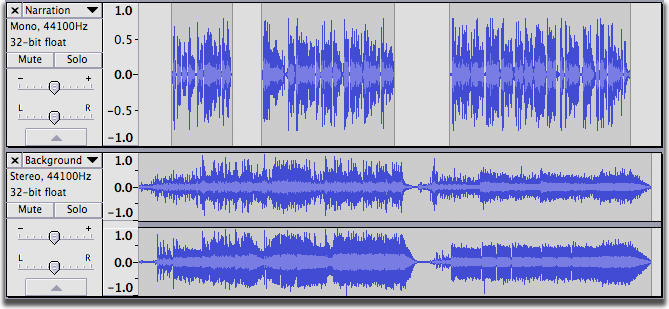

Mixing Audio Tracks
From Audacity Manual
Audacity mixes automatically when playing or exporting, but it can also physically mix selected multiple tracks together into one within the project.
The channel of a track being mixed affects whether it will be mixed into the left channel of the resulting track(s), the right channel, or both (mono). For example, if you have four tracks:
- Track 1: left channel
- Track 2: left channel
- Track 3: right channel
- Track 4: mono channel
Mixing can be done for a number of reasons, for example mixing speech with background music to make a podcast, or adding different instruments into the same song. Concatenating songs (for example, playing three songs one after the other) does not necessarily involve mixing, but if you wanted the songs to fade into each other it would involve mixing.
Within an Audacity project, you can physically mix selected multiple selected tracks into a single mono or stereo track using either of two explicit mix commands:
- (which replaces the original track(s) with the mixed track) or
- (which adds the mixed track to the project, preserving the original tracks).
However in Audacity, mixing is automatic. You could just put audio into two different tracks, play to listen to the result then export it as an audio file like MP3 or WAV or burn the WAV to Audio CD.
However once audio has been finally mixed (as in an audio file you might import into Audacity) it is essentially impossible to separate out all the original parts again; it's like trying to take the banana out of a banana milkshake after you've already put it through the blender. There are a few occasions when it actually is possible to separate sounds a bit - you can sometimes isolate the bass, or remove the lead vocals. But these processes don't always work well and usually cause some quality loss. So remember, as long as the multiple tracks are inside an Audacity project, you can manipulate them independently, but once you export as a mixed down file you can't expect to separate the different parts again. So keep your Audacity project around if you plan to continue editing!
The controls used for mixing are the and buttons and the Gain (-.....+) and Pan (L.....R) sliders.
- 
In the above example, mixing the mono (upper) and stereo (lower) track means that the audio of the mono track will be heard equally in both left and right channels of the resulting stereo mix.
Muting and Soloing
When working with multiple tracks, it's often important to be able to hear just one at a time. Each track has a Mute and a Solo button, allowing you to temporarily hear just some of your tracks - see the figure above
- causes a track to be silenced. More than one track can be muted.
- can behave in two different ways depending on the setting made in Tracks Preferences.
- Default behavior is that Solo silences all of the tracks except the ones being soloed. More than one track can be soloed, and soloing overrides muting.
- Alternative behavior is that only one track can be soloed at a time. Soloing still overrides muting.
A third option in Tracks Preferences is to hide the Solo button from tracks, leaving just a Mute button which silences whichever tracks it is applied to.
You can press the Mute and Solo buttons while tracks are playing.
If you're using the keyboard, SHIFT+U toggles muting on the currently focused track which has the yellow border, and SHIFT + S toggles soloing. The solo shortcut works even if you hide the Solo button.
Gain and panning
Above the Mute / Solo buttons, each track has a - / + gain slider which adjusts the track's volume, and an L / R pan slider which adjusts the track's stereo position in the overall mix - whether it comes from the left speaker, right speaker or in-between. To change the value, just click on the slider and drag. For finer control when dragging, hold SHIFT while dragging or double-click on the slider or slider scale to enter a precise value as text.
The normal range of gain is from -36 dB to 36 dB. If you need more, choose .
If you're using the keyboard, use:
- ALT + SHIFT + UP to increase the gain on the focused track or ALT + SHIFT + DOWN to reduce it
- Use ALT + SHIFT + LEFT to pan left on the focused track or ALT + SHIFT + RIGHT to pan right.
Or press SHIFT + G to adjust the gain in a dialog box or SHIFT + P to adjust the pan.
Explicit Mixing and Rendering
While mixing is automatic, there are times when you may want to explicitly tell Audacity to mix several tracks. This is useful in several ways:
- You can consolidate tracks which you have finished working on, making it easier to see the other tracks without scrolling up and down
- Playback may respond more quickly with fewer tracks
- You can see what the final mix will look like as a waveform so as to check the overall level of the final mix before exporting it.
To mix explicitly, select all the tracks you want to mix together then choose either or (shortcut CTRL + SHIFT + M).
Several things happen when you choose either Mix and Render command.
- All selected tracks are mixed down to a single track called "Mix".
- If you choose "Mix and Render", the resulting "Mix" track replaces the selected original tracks.
- If you choose "Mix and Render to New Track", the original tracks are preserved so that the resulting "Mix" track becomes an additional track in the project.
- The "Mix" track is always placed underneath any non-selected or remaining tracks.
- The new mixed track will be stereo unless the tracks you mixed were mono tracks panned to center.
- If any of the original tracks did not match the sample rate of the project (set at bottom left of the project window in Selection Toolbar), they will be resampled to match the project rate.
- Any envelope points defining amplitude modifications will be applied and the previous envelope points removed.
- Gain and panning changes will be applied and the sliders reset to normal in the mixed track.
- Mute and Solo button states will be released.
You can always if you're not happy with the results of Mix and Render, then make changes and try it again.
Mixing Levels
The act of mixing multiple tracks adds the waveforms together. In most cases this will cause the mixed track to have a higher peak and RMS (average) level than the individual pre-mixed tracks, though this is not always true by definition. How much (or whether) the peak level increases and how much louder it actually sounds depends on how related the waveforms of the mixed tracks are.
When peaks or troughs in the waveform coincide, the waveforms will reinforce each other, leading to an increased signal level. In fact if you combined two identical tracks, the signal level would exactly double, leading to an increase in peak level of 6 dB. But when a peak in one track coincides with a trough in another track the waveforms will tend to cancel each other out, leading to a lower level in the mix at that point.
Also the more tracks that have audio at the same point on the Timeline, the higher the mix level is likely to be.
The overall mix level is indicated on the Playback Meter when the project is playing. You can see individual meters for each track (showing the levels as modified by the track's gain/pan sliders and mute/solo buttons) if you enable .
Because mixing tracks is additive, the combined level may show clipping distortion in the Meter Toolbar. In that case, you should use the gain sliders on one or more tracks to reduce the overall level.
|